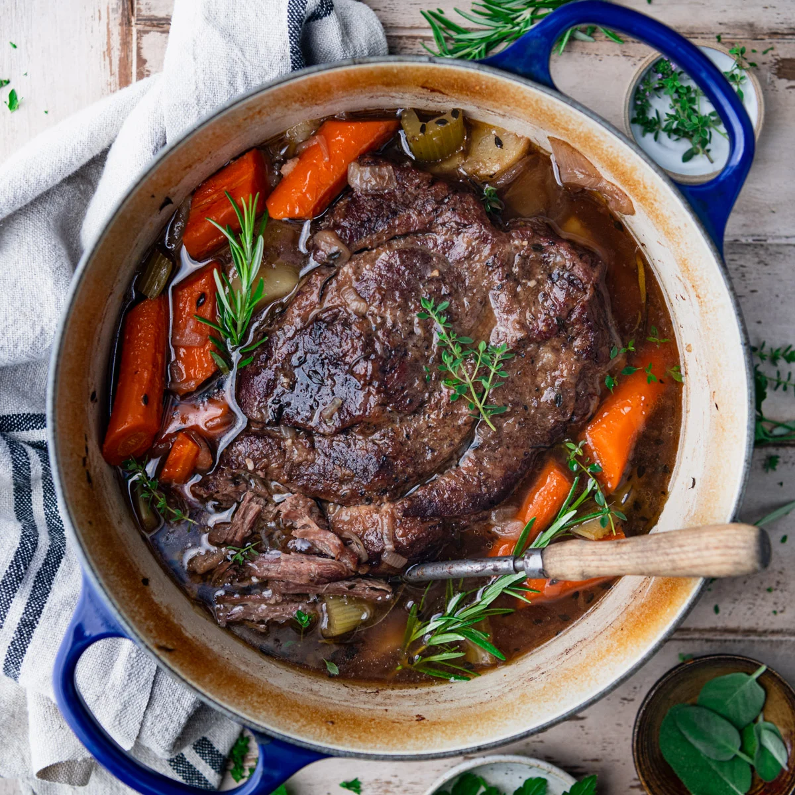

Pot Roast

Make this beautiful pot raost for a comforting weeknight dinner or special Sunday meal
Pot roast is delicious, even vegans cannot deny this, and only a fascist would disagree. The braising technique yields excellent results and is easy to learn and apply to other dishes where the cut of meat is not particularly tender.
Pot roast is also a prime leftover to have on hand due to it's versatility as a cold, pre-cooked ingredient. It can be used to make meat pies, a delicious breakfast scramble with feta, or as part of an elevated leftovers benedict. Try it out.
Ingredients
- 3 lb. Chuck roast, or similar cut of beef
- Salt
- Pepper
- 3 large carrots
- 3 celery ribs
- 3 Tbsp. tomato paste
- 2 lbs. potatoes, any variety
- 2 Cups beef broth
- 1 Cup dry red wine
- 1 large white or yellow onion
- Several cloves of garlic, smashed
- 3 Bay leaves
- Several sprigs of thyme or rosemarry, or both.
- Fat for the pan - I use lard, but olive oil or any oil you prefer is fine.
Instructions
- Heat Dutch oven over medium, add oil or fat of your choice
- Pat dry the chuck roast and liberally apply salt and pepper to both sides
- Once your Dutch oven is hot enough, place the chuck roast into the pan and brown on both sides.
- While your roast is browning, roughly chop the onion, carrots, and celery. Peel and smash the garlic.
- Once the roast is browned on both sides, remove to a plate and add the onion, carrots, and celery to the Dutch oven. Let them soften on medium heat for a few minutes. You can place a lid on your Dutch oven to speed the process while preventing your vegetables from getting dry or burnt
- Once the onions and celery are beginning to soften and release some of their moisture add the garlic and tomato paste. Cook for a few minutes until the tomato paste loses its raw taste
- Add red wine, making sure to scrape any accumulated bits (fond) from the bottom of the Dutch oven, and then add beef broth, bay leaves, and other herbs. Bring to a simmer.
- Once your vegetables and liquid are simmering, turn off the heat, and return your browned roast to the Dutch oven. The cooking liquid should almost cover the roast. Add more broth if needed.
- Taste liquid and add salt/pepper to taste
- Place roast in oven for two hours at 325 degrees F.
- Remove Dutch oven and add potatoes - chopped if using large potatoes, whole if using small potatoes like fingerlings.
- Cook for 1-1.5 hrs more, checking for desired tenderness and doneness of potatoes after the first hour.
- Optional: remove roast and strain veggies/solids from cooking liquid. Use strained and de-fatted liquid to create a gravy.